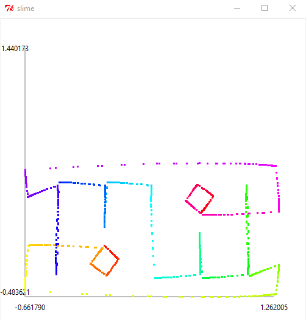

TL;DR
See on this page: Design Lab 03 (All Carrot, No Stick)
Unit 2: Signals and Systems
Lecture 3 Signals and Systems
Lecture Handout
Readings
Read section 4.2 of the course notes.
My Notes
Difference Equations- is Declarative
tells the true statement about what the system will do.
Block Diagram - is Imperative
tells what to do now
Abstraction is to use Signals instead of Samples
Using Operators
Operator works on Signal only
Operator obeys commutivity
Operator multiplication is distributive in addition
Operator obeys distributivity
Design Lab 03 (All Carrot, No Stick)
Objective: Hip to be Square
a. CombinedDynamicMoveToPoint
Propotional controller that performs both rotation and forward movement simultaneously towards the final point. The Robot moves forward and rotates at the same time making it combined smooth motion.

b. SequentialDynamicMoveToPoint
Propotional controller that first performs rotation towards the direction of the final point and then moves towards it. The Robot first rotates towards the goal, then moves forward making it a sequential motion.

Objective 5. I am a ballerina
The robot gracefully dance the pattern of a secret message

Source Code
- DynamicMoveToPoint(swtch=True, sequential=False)[source]
Basically a method to choose between
CombinedDynamicMoveToPointandSequentialDynamicMoveToPoint
- class CombinedDynamicMoveToPoint[source]
Provides a state machine that performs both rotation and forward movement towards the final point at the same time.
A DynamicMoveToPoint state machine takes an input that is a tuple containing two items: the first is an instance of util.Point and the second is an instance of io.SensorInput. On each step, the state machine generates one instance of io.Action, which specifies a single step toward the specified util.Point
- forwardGain = 2.0
- rotationGain = 6.0
- angleEps = 0.05
- distEps = 0.02
- startState = 'moving'
- getNextValues(state, inp)[source]
Generates the next set of values for the given state and input.
- Parameters:
state (object) – The current state of the system.
inp (tuple) – The input values for the system.
- Returns:
The next state of the system and the corresponding action.
- Return type:
tuple
- Raises:
AssertionError – If the input is not a tuple or if its length is not 2, or if the first element of the tuple is not a Point object.
- Explaination:
The function calculates the error in the desired position and orientation.
It generates the rotational and forward velocities based on the error.
If the current position is near the final position, the function returns the “done” state and a zero action.
Otherwise, it returns the current state and the generated action.
- class SequentialDynamicMoveToPoint[source]
Provides a state machine that first rotates towards the direction of the final point and then moves towards it.
A DynamicMoveToPoint state machine takes an input that is a tuple containing two items: the first is an instance of util.Point and the second is an instance of io.SensorInput. On each step, the state machine generates one instance of io.Action, which specifies a single step toward the specified util.Point
- forwardGain = 2.0
- rotationGain = 2.0
- angleEps = 0.05
- distEps = 0.02
- startState = 'start'
- getNextValues(state, inp)[source]
Generates the next set of values for the given state and input.
- Parameters:
state (object) – The current state of the system.
inp (tuple) – The input values for the system.
- Returns:
The next state of the system and the corresponding action.
- Return type:
tuple
- Raises:
AssertionError – If the input is not a tuple or if its length is not 2, or if the first element of the tuple is not a Point object.
- Explaination:
The function calculates the error in the desired position and orientation.
It generates the rotational and forward velocities based on the error.
It first rotates towards the desired point then moves forward
If the current position is near the final position, the function returns the “done” state and a zero action.
Otherwise, it returns the current state and the generated action.
- switchCondition(inp)[source]
Use the sm.Switch state-machine combinator in
DynamicMoveToPoint()to make a robot that stops for pedestrians.The robot stops if front sonar distance is less that 0.3m.